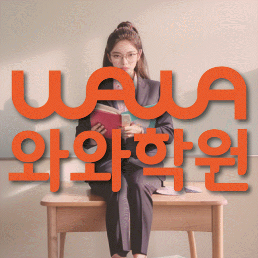

HIGH SCHOOL MATH
범박동 고등 수학학원
범박동 고등 수학학원 선택 전 문제를 맞히는 풀이 과정을 세우는 학습, 서술형 풀이와 개념 연결 점검, 내신·모의고사 계획과 센터 정보를 확인하세요.
01 Quick answer
범박동 고등 수학: 문제를 맞히는 풀이 과정을 세우는 학습
범박동에서 ‘문제를 맞히는 풀이 과정을 세우는 학습’을 판단할 때는 최근 점수보다 풀이 흔적을 먼저 봐야 합니다. 진단 자료: 최근 서술형 답안에서 빠진 조건·등식·결론을 다른 표시로 나누세요. 이번 행동: 조건, 사용 개념, 계산, 결론을 단계별로 다시 쓰고 각 식의 이유를 한 줄로 남기세요. 재확인: 유사 문제에서도 같은 풀이 순서를 유지하고 생략한 조건 없이 설명하는지 확인하세요.
확인 기준
범박동 시험지에서는 서술형 풀이에서 막힌 이유를, 다음 계획에서는 개념 연결의 확인일을 찾아 이용 조건과 구분합니다.


 010-6839-8283010-6839-8283010-6839-8283
010-6839-8283010-6839-8283010-6839-8283학습 답변 요약
핵심 주제는 ‘문제를 맞히는 풀이 과정을 세우는 학습’입니다. 서술형 풀이와 개념 연결의 출발 상태를 확인하고 오답 원인·재풀이와 조건 해석·식 세우기의 실행 기록과 학교·센터 사실을 분리해 살펴봅니다.
범박동 고등 수학 진단: 문제를 맞히는 풀이 과정을 세우는 학습
범박동에서 고등 수학 계획을 세울 때 ‘문제를 맞히는 풀이 과정을 세우는 학습’을 첫 질문으로 둡니다. ‘답은 구하지만 사용한 조건과 식의 이유를 채점 가능한 순서로 적지 못하는지’가 실제 자료에서도 드러나는지부터 확인하세요.
다음으로 ‘공식의 이름은 알지만 적용 조건과 개념 사이의 관계를 자기 말로 설명하지 못하는지’를 따로 확인하고 두 답이 모두 흔들리면 서술형 풀이와 개념 연결을 한 과제로 묶지 말고 먼저 설명할 영역을 고르세요.
서술형 풀이와 개념 연결의 풀이 기록을 비교하는 방법
진단 자료에서는 ‘서술형 초안에서 생략된 조건·등식·결론과 수정한 답안’과 ‘개념 설명 메모와 대표 문제에서 해당 공식을 선택한 이유’를 한 곳씩 표시하고 자료 위치·날짜·처음 판단한 이유가 달라진 지점을 남기세요.
각 표시 옆에는 ‘유사 문제에서도 풀이 순서를 빠뜨리지 않고 각 식의 이유를 설명하는지’ 또는 ‘풀이를 보지 않고 개념의 적용 조건과 사용 이유를 설명하는지’ 중 해당 질문을 붙이고 재확인 날짜를 적습니다. 이 기록으로 서술형 풀이와 개념 연결에 필요한 피드백을 구체화합니다. 범박동에서는 서술형 풀이의 첫 행동과 개념 연결의 재확인 기준을 서로 다른 칸에 남겨 이 판단을 실제 계획에 연결하세요.
내신 범위와 누적 학습에서 서술형 풀이와 개념 연결을 확인하는 순서
내신 기록에는 범위·개념·유형·서술형을, 모의고사 기록에는 유형·근거·소요 시간을 적습니다. 두 기록 모두 ‘학교별 서술형 채점 요소와 모의고사의 객관식 풀이 근거를 서로 다른 형식으로 남기는 기준’과 ‘내신 범위의 필수 개념과 모의고사에서 다시 등장한 선수 개념을 구분해 연결하는 기준’ 중 실제 자료에 맞는 기준을 고르세요.
이번 주에는 학교 범위에 적용할 서술형 풀이와 개념 연결 연습 항목과 새 문제에서 확인할 기준을 각각 한 줄씩 정합니다. 시험 뒤 네 기록을 비교해 공통 기초와 시험별 문제를 구분하세요.
내신 마감일을 적은 뒤 ‘문제를 맞히는 풀이 과정을 세우는 학습’과 관련된 서술형 풀이 점검일, 개념 연결 재확인일을 차례로 배치하세요. 시험이 끝난 뒤에는 서술형 풀이와 개념 연결 기록 가운데 학생이 근거를 설명하지 못한 영역만 다음 주 계획에 남깁니다.
문제를 맞히는 풀이 과정을 세우는 학습: 학습 질문과 센터 사실 나누기
공개 자료에 시온고·소사고·범박고 등이 학교명으로 보이지만, 이 목록만으로 해당 학교 학생의 수업 가능 여부를 판단할 수는 없습니다.
현재 페이지에서 확인되는 수학 학년 범위는 고1·고2·고3이며 오답 원인·재풀이와 조건 해석·식 세우기를 어느 학년에 적용하는지는 현재 개설 범위와 함께 물어보세요. 페이지가 안내하는 센터명은 와와학습코칭센터 범박점, 제공 주소는 경기 부천시 소사구 은성로 132 5층입니다. 와와학습코칭센터 범박점 이용 조건을 비교할 때는 교습비 자료·현재 시간표·통학 동선을 서로 다른 항목으로 적습니다.
서술형 풀이에서 개념 연결로 이어지는 7일 실행안
기준선 자료로 ‘서술형 초안에서 생략된 조건·등식·결론과 수정한 답안’을 보존하세요. 7일 동안 ‘조건 표시·사용한 개념·계산·결론을 단계별로 적고 불필요한 문장을 줄이기’를 해 보고 도움을 받은 지점과 혼자 한 지점을 구분합니다.
7일째에는 ‘유사 문제에서도 풀이 순서를 빠뜨리지 않고 각 식의 이유를 설명하는지’를 첫 기록과 대조합니다. 변화가 없으면 문제 수를 늘리지 말고 ‘조건 표시·사용한 개념·계산·결론을 단계별로 적고 불필요한 문장을 줄이기’의 순서를 단순화한 뒤 다시 확인합니다.
최근 시험지로 준비하는 서술형 풀이 상담 질문
최근 시험지 한 장과 현재 교재를 준비하세요. 첫 질문은 ‘정답뿐 아니라 서술형의 논리 순서와 누락 조건을 어떤 기준으로 첨삭하는지’, 두 번째는 ‘공식 암기와 개념 이해를 어떤 질문과 풀이 기록으로 나누어 확인하는지’입니다.
답변은 서술형 풀이의 첫 행동과 개념 연결을 다시 확인할 날짜로 바꿔 적으세요. 주소·학년·시간표·교습비는 학습 질문과 다른 줄에 남깁니다.
- 학생 자료최근 시험지와 서술형 풀이 표시 위치
- 시험 계획학교 범위표와 개념 연결 마감일
- 재확인오답 원인·재풀이 확인 날짜와 학생 설명 기록
- 이용 조건수학 가능 학년(고1·고2·고3)·시간표·교습비·통학 동선
02 Parent perspective
범박동 고등 수학 학부모 상담 상황
아래 범박동 고등 수학 상담 장면은 실제 이용 후기나 특정 학생의 성과가 아닌 준비용 가상 예시입니다. 학습 결과는 학생의 출발점과 실천 정도에 따라 달라질 수 있습니다.
범박동 학부모가 최근 시험지 한 장으로 상담을 준비하는 가상 상황입니다. ‘문제를 맞히는 풀이 과정을 세우는 학습’을 구체화하기 위해 서술형 풀이 기록과 개념 연결 설명을 비교합니다.
범박동 상담 뒤 등록 여부를 비교하는 가상 장면입니다. 학부모는 수학 가능 학년(고1·고2·고3)·교습비·시간표를 사실 항목으로 적고 오답 원인·재풀이를 다시 확인할 날짜는 학습 계획에 따로 남깁니다.
03 FAQ
범박동 고등 수학 자주 묻는 질문
학생 자료, 가능 학년과 실제 이용 조건을 나누어 답했습니다.
범박동 고등 수학에서 ‘문제를 맞히는 풀이 과정을 세우는 학습’은 어떤 자료부터 확인하나요?
먼저 ‘서술형 초안에서 생략된 조건·등식·결론과 수정한 답안’이 보이는 자료 위치와 날짜를 적습니다. 이후 ‘조건 표시·사용한 개념·계산·결론을 단계별로 적고 불필요한 문장을 줄이기’를 수행하고 ‘유사 문제에서도 풀이 순서를 빠뜨리지 않고 각 식의 이유를 설명하는지’에 학생이 혼자 답하는지 확인하세요.
서술형 풀이와 개념 연결 진단 기록은 어떻게 나누나요?
첫 풀이 기록과 다시 설명한 기록을 서술형 풀이와 개념 연결 영역별로 분리하세요. 각 기록에 날짜와 도움받은 지점을 함께 적습니다.
내신과 모의고사에서 서술형 풀이와 개념 연결 비중은 어떻게 나누나요?
내신과 모의고사 모두에서 서술형 풀이와 개념 연결을 확인하되 자료와 마감일은 나눕니다. 판단할 때는 ‘학교별 서술형 채점 요소와 모의고사의 객관식 풀이 근거를 서로 다른 형식으로 남기는 기준’과 ‘내신 범위의 필수 개념과 모의고사에서 다시 등장한 선수 개념을 구분해 연결하는 기준’을 각각 대조하세요.
상담 전 오답 원인·재풀이와 조건 해석·식 세우기를 확인하려면 어떤 자료를 가져가나요?
학교 범위표와 표시가 남은 학습 자료를 한 묶음으로 준비하세요. 오답 원인·재풀이에서 막힌 이유와 조건 해석·식 세우기의 확인 방식을 묻고 다음 점검 날짜를 남깁니다.
범박동 고등 수학 상담에서 가능 학년과 참고 학교는 어떻게 확인하나요?
공개된 범박동 페이지에서 확인되는 수학 학년 정보는 고1·고2·고3입니다. 등록 전에는 실제 개설 여부와 시간을 다시 확인해야 합니다. 제공된 참고 학교명은 시온고·소사고·범박고 등입니다. 학교명만으로 개설 여부를 판단하지 말고 학생의 시험 범위와 현재 반영 가능한 자료를 따로 물어보세요.
04 Related
범박동 관련 학원·상담 페이지
같은 지역의 과목 조합과 학년 카테고리, 앞뒤 지역 안내를 함께 확인하세요.